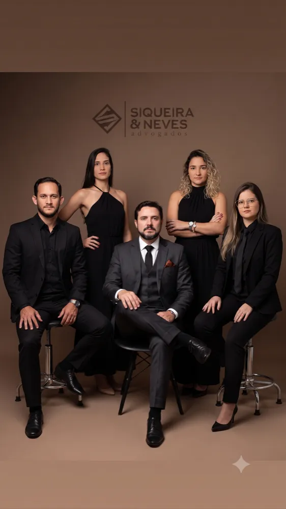

Um mundo mais justo, caso a caso.
Escritório full-service com 10 anos de atuação — Família, Trabalhista, Previdenciário, Empresarial e indenizações Samarco/Rio Doce. À frente, os sócios Elias Siqueira Jr. e Mardson Neves.

Onde o Siqueira & Neves atua por você
-
01Família e InventárioDivórcio · Guarda · Pensão
Os momentos mais delicados conduzidos com cuidado — do acordo ao inventário.
-
02TrabalhistaCLT · Rescisão · Verbas
Defesa de direitos trabalhistas, para empregado ou empregador.
-
03PrevidenciárioINSS · Aposentadoria
Aposentadoria, desaposentação e benefícios junto ao INSS.
-
04Empresarial e SocietárioContratos · Auditoria
Assessoria preventiva e estratégica para empresários e sociedades.
-
05ConsumidorCobrança indevida
Produto com defeito, cobrança indevida e relações de consumo em geral.
-
06Saúde e Direito MédicoPlanos de saúde
Questões com planos de saúde e responsabilidade médica.
-
07ImobiliárioCompra · Regularização
Compra, venda, regularização e disputas envolvendo imóveis.
-
08Recuperação de CréditoCobrança judicial
Cobrança judicial e extrajudicial de valores devidos.
-
09BancárioRevisão de contratos
Revisão de contratos e questões com instituições financeiras.
-
10TrânsitoCNH · Multas
Suspensão de CNH, multas e infrações de trânsito.
-
11AdministrativoServidor público
Questões envolvendo servidores públicos e a administração pública.
-
12Indenizações Samarco / Rio DoceAtingidos · PID
Atuação especializada junto aos atingidos do desastre do Rio Doce — detalhes abaixo.
O Rio Doce passa por aqui. A reparação também.
Rio Doce — Governador Valadares, MG
Atuamos junto a famílias e trabalhadores da região atingidos pelo desastre de Mariana, orientando sobre o direito à indenização e acompanhando cada etapa — do cadastro no programa ao recebimento.
Falar sobre meu casoDois sócios fundadores. Uma banca inteira por trás.
Elias Siqueira Jr.
Advogado com ampla experiência, à frente das estratégias jurídicas do escritório.
Mardson Neves
Advogado com ampla experiência, condução próxima de cada cliente e cada caso.
- ◆Atendimento personalizado. Proximidade com o cliente, respeitando as peculiaridades de cada caso.
- ◆Digital ou presencial. Sede física em Governador Valadares — e atendimento inteiro pelo celular, se você preferir.
- ◆Equipe especializada. Advogados com anos de atuação nas mais diversas áreas do direito.
"Um escritório de profissionais que tratam clientes com seriedade e compromisso, e buscam solucionar os processos de maneira assertiva e competente." — Daniele Dutra
"Excelentes advogados. Profissionais pontuais com os seus prazos, valor justo, e excelente atendimento começando pela recepção. Indico a todos." — Lucilene Alves de Souza Vargas
Precisa resolver algo com a Justiça?
Fale agora com o Siqueira & Neves e entenda, sem compromisso, qual é o melhor caminho para o seu caso.
Falar no WhatsApp